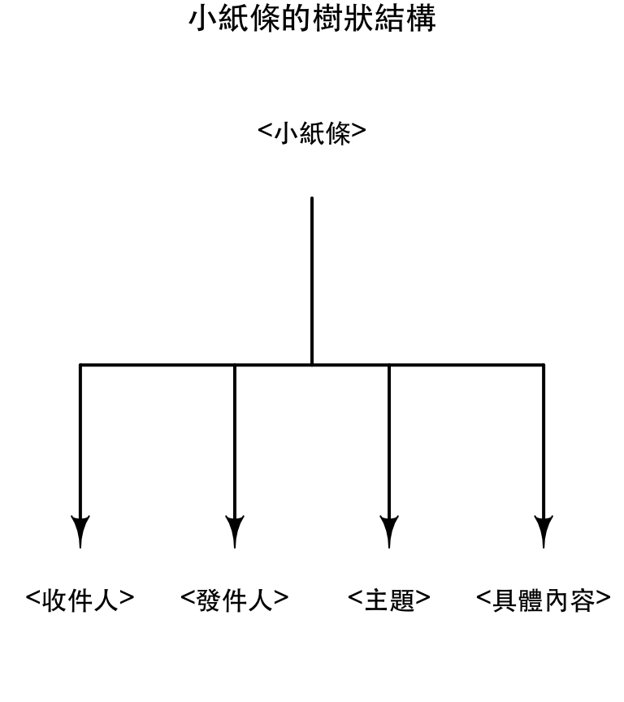
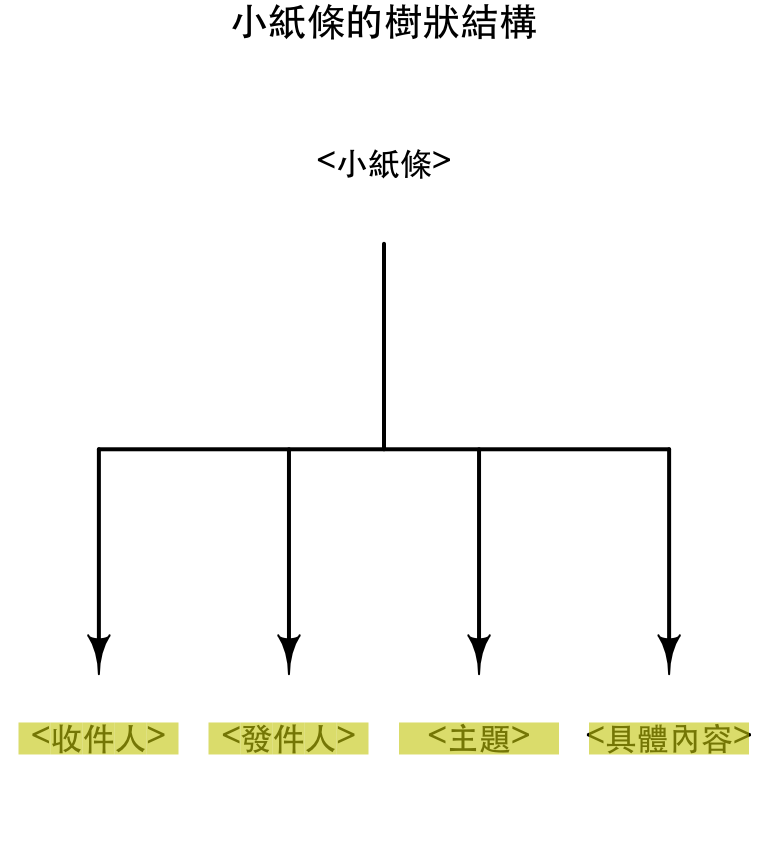
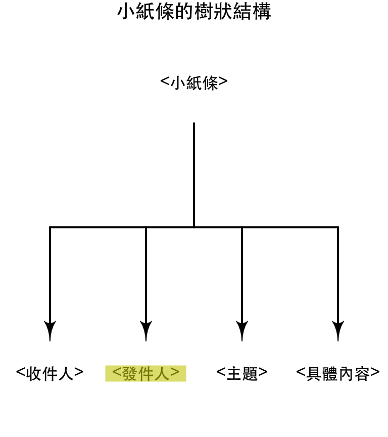
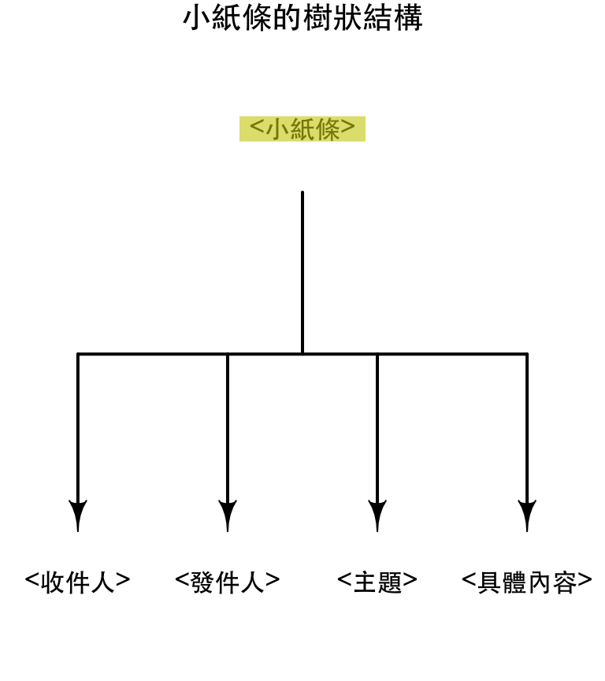
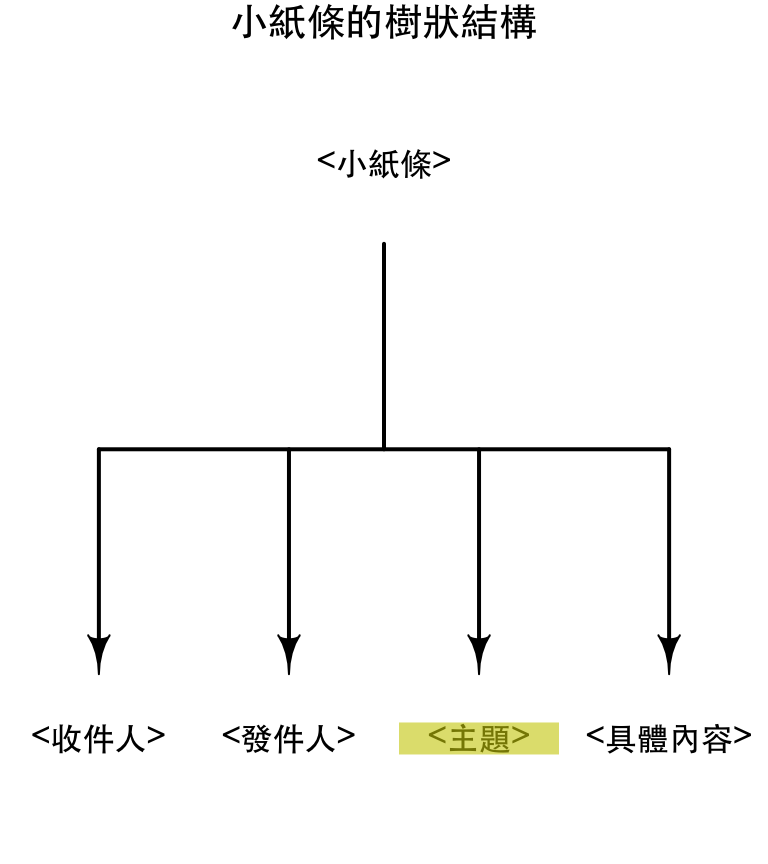

2019-05-11
半結構化的資料處理
大綱
- XML
- JSON
XML
XML(eXtensible Markup Language)
- 讓電腦能理解資料意義的資料格式
- 標籤(tag)
- 屬性(attribute)
- 內容(contents)
- 由使用者定義標籤的意義
<?xml version="1.0"?> <小紙條> <收件人>大元</收件人> <發件人>小張</發件人> <主題>問候</主題> <具體內容>早啊，飯吃了沒？ </具體內容> </小紙條>
XML標籤
<?xml version="1.0"?> <小紙條> <收件人>大元</收件人> <發件人>小張</發件人> <主題>問候</主題> <具體內容>早啊，飯吃了沒？ </具體內容> </小紙條>
- 請問上述XML中有幾種標籤？
- 小紙條
- 收件人
- 發件人
- 主題
- 具體內容
XML內容
<?xml version="1.0"?> <小紙條> <收件人>大元</收件人> <發件人>小張</發件人> <主題>問候</主題> <具體內容>早啊，飯吃了沒？ </具體內容> </小紙條>
- 請問上述XML中各個標籤的內容是？
- 小紙條：
<收件人> ... </具體內容> - 收件人：
大元 - 發件人：
小張 - 主題：
問候 - 具體內容：
早啊，飯吃了沒？
- 小紙條：
XML屬性
- 標籤可以附帶屬性
沒有屬性的標籤
<具體內容>早啊，飯吃了沒？ </具體內容>
有屬性的標籤
<具體內容 font="新細明體" size="12">早啊，飯吃了沒？ </具體內容>
<具體內容>有以下的標籤：font：新細明體size：12
XML declaration
- XML的第一行通常會宣告這一份XML文件所依循的標準與文件所使用的編碼（編碼是什麼，下週會討論到）
<?xml version="1.0"?>
<?xml version="1.0" encoding="UTF-8"?>
HTML
(HyperText Markup Language)
- HTML用於撰寫網頁
- HTML是比較寬鬆的XML，但是XML不是HTML
- HTML允許用
<foo/>代替<foo></foo> - HTML中的標籤是被定義的
- XML可以自己定義標籤
- HTML允許用
<html>
<head>
<script type="text/javascript" src="loadxmldoc.js">
</script>
</head>
<body>
<script type="text/javascript">
xmlDoc=loadXMLDoc("books.xml");
document.write("xmlDoc is loaded, ready for use");
</script>
</body>
</html>
把XML當非結構化資料作處理
x <- '<?xml version="1.0"?> <小紙條> <收件人>大元</收件人> <發件人>小張</發件人> <主題>問候</主題> <具體內容>早啊，飯吃了沒？ </具體內容> </小紙條> '
- 請找出這個紙條的主題
- 請找出標籤<主題>的內容
把XML當非結構化資料作處理
. <- strsplit(x, "\n")
. <- .[[1]]
. <- .[grepl("主題", .)]
. <- gsub("<主題>", "", .)
gsub("</主題>", "", .)
## [1] " 問候"
把XML當XML作處理
- 運用XML的結構，我們可以更穩健的找到我們要的資訊
library(xml2) doc <- read_xml(x) . <- xml_find_first(doc, "/小紙條/主題") xml_text(.)
## [1] "問候"
XPath與XML的樹狀結構
<小紙條> <收件人>大元</收件人> <發件人>小張</發件人> <主題>問候</主題> <具體內容>早啊，飯吃了沒？ </具體內容> </小紙條>
<小紙條>是<主題>的父標籤- 標籤之間的空白是不影響的XML的（只是為了排版好讀）
<收件人>、<發件人>、<主題>與<具體內容>都是<小紙條>的子標籤
XPath與XML的樹狀結構
- 除了最上層的根之外，XML中所有的標籤都有「唯一」的「父標籤」
<小紙條>是這份XML文件的根<html>是所有網頁的根
doc <- read_xml(x) class(doc) ## [1] "xml_document" "xml_node" doc ## {xml_document}
## <小紙條>
## [1] <收件人>大元</收件人>
## [2] <發件人>小張</發件人>
## [3] <主題>問候</主題>
## [4] <具體內容>早啊，飯吃了沒？ </具體內容>
|
root <- xml_root(doc) class(root) ## [1] "xml_document" "xml_node" root ## {xml_document}
## <小紙條>
## [1] <收件人>大元</收件人>
## [2] <發件人>小張</發件人>
## [3] <主題>問候</主題>
## [4] <具體內容>早啊，飯吃了沒？ </具體內容>
|
在XML中移動
<收件人>、<發件人>、<主題>、<具體內容>是<小紙條>的子(child)節點

## [,1] [,2] ## [1,] 0.500 0.75 ## [2,] 0.125 0.25 ## [3,] 0.375 0.25 ## [4,] 0.625 0.25 ## [5,] 0.875 0.25
在XML中移動
node <- xml_root(doc) node ## {xml_document}
## <小紙條>
## [1] <收件人>大元</收件人>
## [2] <發件人>小張</發件人>
## [3] <主題>問候</主題>
## [4] <具體內容>早啊，飯吃了沒？ </具體內容>
|
|

在XML中移動
xml_children(node) ## {xml_nodeset (4)}
## [1] <收件人>大元</收件人>
## [2] <發件人>小張</發件人>
## [3] <主題>問候</主題>
## [4] <具體內容>早啊，飯吃了沒？ </具體內容>
|
 |
在XML中移動
node <- xml_children(node)[[2]] node ## {xml_node}
## <發件人>
|
 |
在XML中移動
node <- xml_parent(node) node ## {xml_node}
## <小紙條>
## [1] <收件人>大元</收件人>
## [2] <發件人>小張</發件人>
## [3] <主題>問候</主題>
## [4] <具體內容>早啊，飯吃了沒？ </具體內容>
|
 |
XML中的移動
- 透過上述的要領，只要給我們一個節點，我們即可從該節點開始遊走整棵樹
- 如何快速定位出我們要的節點？
XPath與XML的樹狀結構
- XPath透過樹狀結構與屬性，幫助我們快速的從XML中找到節點
<小紙條> <收件人>大元</收件人> <發件人>小張</發件人> <主題>問候</主題> <具體內容>早啊，飯吃了沒？ </具體內容> </小紙條>
- 根：
/小紙條 小紙條下的主題：/小紙條/主題- 所有的主題：
//主題
XPath範例
xml_find_first(doc, "/小紙條/主題") ## {xml_node}
## <主題>
|
 |
XPath範例
xml_find_all(doc, "/小紙條/主題") ## {xml_nodeset (1)}
## [1] <主題>問候</主題>
|
|

範例：政府採購資料網的解析
tmp.path <- tempfile(fileext = ".html")
download.file("http://homepage.ntu.edu.tw/~wush978/rdataengineer/0080400004.html", destfile = tmp.path)
browseURL(tmp.path)
x <- read_html(tmp.path)
範例：找出中間表格中的資料名稱
機關代碼、機關名稱等標籤內容，代表的是右邊的標籤內容的「資料名稱」- 透過瀏覽器，我們發現兩者同是
tr標籤底下的th與td- 「資料名稱」是
th標籤的內容 - 「資料內容」是
td標籤的內容
- 「資料名稱」是
- 利用XPath直接找出所有
tr底下的th
. <- xml_find_all(x, "//tr/th") . <- sapply(., xml_text) head(.)
## [1] "機關代碼" "機關名稱" "單位名稱" "機關地址" "聯絡人" "聯絡電話"
tail(.)
## [1] "總決標金額" ## [2] "總決標金額是否公開" ## [3] "契約是否訂有依物價指數調整價金規定" ## [4] "未列物價調整規定說明" ## [5] "履約執行機關" ## [6] "附加說明"
範例：找出中間表格中的資料內容
- 直接用XPath找出所有的f
tr底下的td
th <- xml_find_all(x, "//tr/th") td <- xml_find_all(x, "//tr/td") length(th)
## [1] 116
length(td)
## [1] 214
td太多了
範例：找出中間表格中的資料內容
- 直接用XPath找出所有的
th旁邊的td
th <- xml_find_all(x, "//tr/th") td <- xml_find_all(x, "//tr/th/../td") length(th)
## [1] 116
length(td)
## [1] 116
找出「機關名稱」
th.text <- sapply(th, xml_text) td.text <- sapply(td, xml_text) td.text <- trimws(td.text) td.text[th.text == "機關名稱"]
## [1] "台灣電力股份有限公司"
找出「標案名稱」
td.text <- trimws(td.text) td.text[th.text == "標案名稱"]
## [1] "套管插頭等壹批"
隨堂練習
- 找出投標公司的統編
- 找出得標公司的統邊
- 找出所有和查詢有關的連結其背後的網址